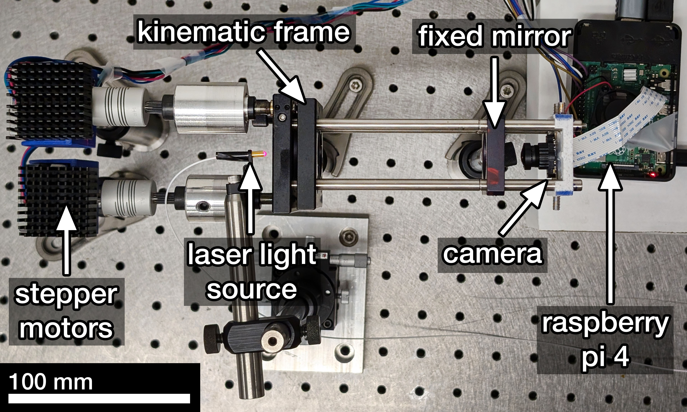
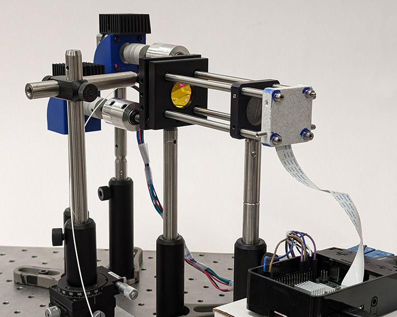
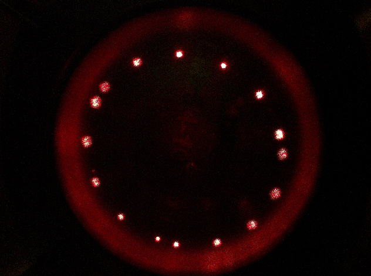
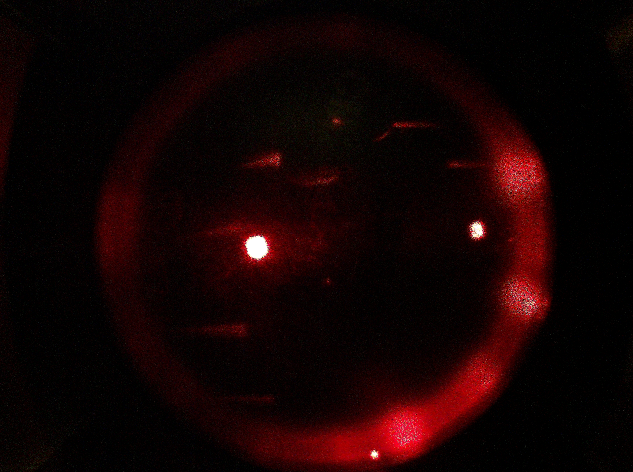
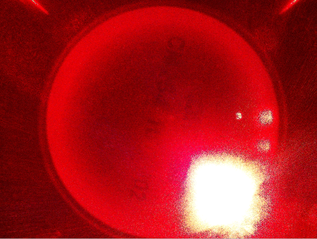
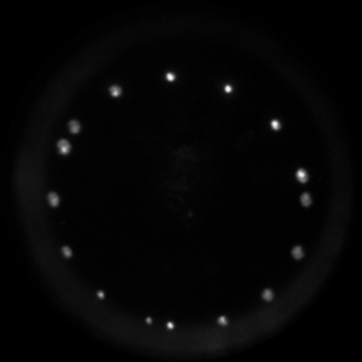
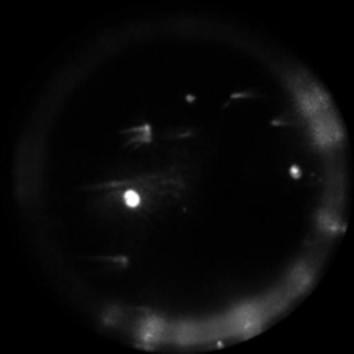
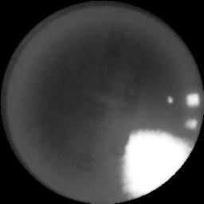
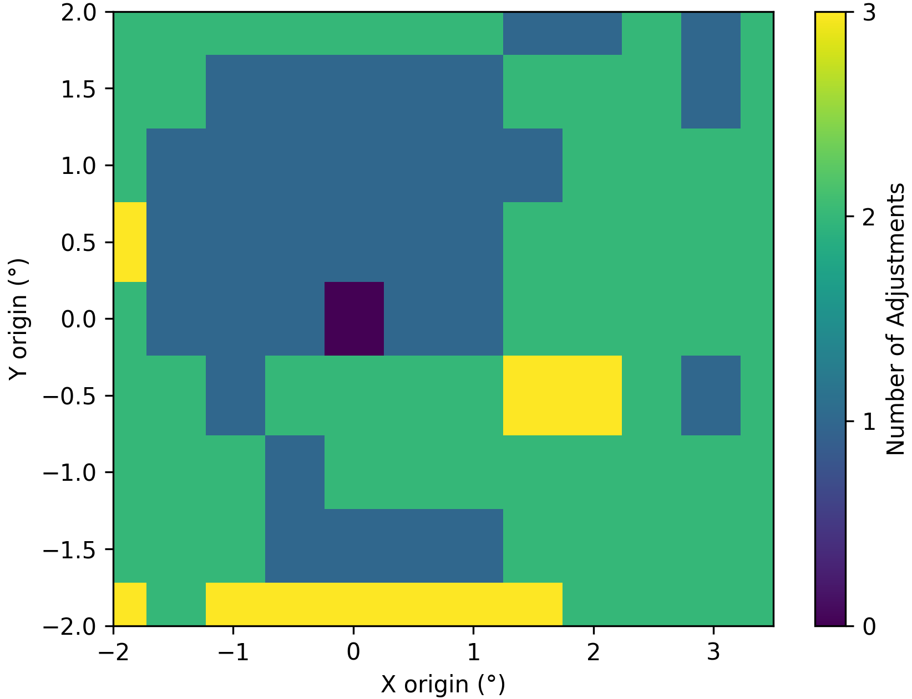

Herriott cells fold a long optical path into a compact volume, making them attractive for trace-gas detection; however, their multipass geometry is highly sensitive to mirror misalignment. Conventional systems protect alignment with heavy, expensive optomechanical assemblies and periodic manual tuning, which raises sensor cost and limits field deployment. We present a deep-learning method for autonomous in situ alignment of a Herriott cell using low-cost stepper motors and camera feedback on a Raspberry Pi 4: a ResNet-18 network infers angular corrections for a motorized mirror mount directly from the cavity’s reflection pattern. Trained on 228,000 labeled images spanning the actuation range, the closed-loop system recovered optimal alignment from every position in its actuation range, converging in fewer than two correction steps on average with a mean residual error of . The approach provides a practical path toward low-cost, field-deployable multipass gas sensors that recover from thermal and mechanical disturbances without human intervention.
Keywords: Automatic alignment, computer vision, gas sensors, Herriott cell, machine learning, multipass, optics, real-time systems 1.
Fiber-optic and free-space optical sensors are increasingly deployed in industrial and energy systems. Among them, tunable diode laser absorption spectroscopy (TDLAS) is a powerful method for industrial gas monitoring, offering exceptional sensitivity and selectivity. To maximize this sensitivity, TDLAS systems often employ multipass Herriott cells, which fold a long optical path into a compact volume, but their effectiveness depends critically on mirror alignment: angular deviations as small as a few milliradians can significantly degrade system performance.
This sensitivity to misalignment is a significant barrier to widespread industrial adoption. To minimize the risk, optical elements are typically mounted on high-precision kinematic mounts attached to rigid metal frameworks. While effective, this approach increases weight and cost, forcing compromises between performance and robustness. Each optical element has at least two rotational degrees of freedom, so maintaining alignment under thermal stress and vibration is challenging, and the task is traditionally handled manually by experienced personnel. Automated correction with sensor feedback and optimization algorithms is possible, but the high dimensionality of the problem, compounded by environmental variation, makes it complex even for seasoned optical engineers.
Machine learning has recently been applied to such problems, with a strong trend toward vision-based neural networks that interpret camera data directly. Deep learning has been used to diagnose misalignment in multi-lens imaging systems, reinforcement learning to align camera lens systems, and a CNN–genetic-algorithm approach to align a Fabry–Pérot cavity. These methods target different components and do not generalize to Herriott cells, whose automated alignment remains a notable gap in the literature. This paper closes that gap with an imaging-based deep neural network that provides real-time feedback for closed-loop, in situ alignment of a Herriott cell; the cell, with its high sensitivity to misalignment, is an ideal and challenging testbed for autonomous optical systems intended for remote and industrial applications. 2.
In the Herriott cell under study, two gold-plated semitransparent (98% reflectivity) concave mirrors with 100 mm focal length (Thorlabs CM254-100-M02 and CM254-100EH3-M02) face each other at a separation of 85 mm, aligned at a paraxial angle to extend the optical path. At optimal alignment the cavity produces a ring pattern of 16 reflections on the output mirror, which a high-resolution camera observes from outside the cavity.
The complete alignment setup (Figure 1) comprises the cavity, two stepper motors, a fixed gradient-index (GRIN) lens launching the input beam, the camera, and a Raspberry Pi 4 serving as the central control unit. The single-board computer manages both image acquisition and motor actuation, and was selected for its suitability as a low-cost edge computing device in an industrial Internet of Things context. The GRIN lens remains fixed while one mirror is carried by a two-axis kinematic mount (Thorlabs KC1-L), allowing independent rotational control about the X and Y axes. The stepper motors are mechanically coupled to the fine-adjustment screws of the mount through rigid shafts, enabling bidirectional rotation without displacing the motors and preserving compactness and mechanical stability. Model predictions, expressed as angular deviations in degrees, are translated into discrete motor steps based on the mechanical characteristics of the mount and motor assembly, achieving an effective angular resolution of .


3.
Experimental data was collected by actuating the mirror frame over on the X axis and on the Y axis. The X range was limited to because larger misalignments cause the beam to exit the cavity after a single reflection, yielding uninformative images; the model nevertheless generalizes up to during evaluation. The minimum adjustment increment of on both axes is set by the mechanical precision of the stepper motors and linkage. A complete scan of this actuation space produced 228,000 image samples, each paired with the precise mirror orientation as its label. At optimal alignment the experimental cavity reproduces the expected 16-reflection ring pattern, while increasing misalignment skews and finally scatters the spot geometry (Figure 2).






RGB images are captured at a native resolution of pixels, centrally cropped to , and resized to with bilinear interpolation. During inference, the resized image is converted to grayscale using a luminance-weighted sum of the color channels:
| (1) |
During training, augmentation transformations (brightness, contrast, saturation, and hue jitter, plus Gaussian noise) are applied in RGB space before grayscale conversion, so the model observes a wide range of color and lighting variation during learning and relies on the geometry of the spot pattern rather than pixel-level cues. Finally, a circular binary mask zeroes all pixels outside the lens region:
| (2) |
Figure 2 (bottom row) shows preprocessed examples corresponding to the raw views above them. 4.
In misaligned configurations the laser reflections exhibit highly scattered geometries that render classical computer vision techniques such as the Hough transform or blob detection ineffective. The preprocessed input consists of sparse, high-contrast spots against a uniform background, where the critical information lies in the global spatial relationships between spot positions; convolutional networks capture such patterns through sufficient depth, with residual connections enabling effective training of deep architectures. The regression model is therefore based on a ResNet-18 backbone whose final classification layer is replaced by a regression head of 512 fully connected neurons predicting the alignment correction vector , trained end-to-end on our dataset.
The 228,000 samples were partitioned into training and validation subsets (80/20 split), with the augmentations of Section 3 applied at train time. The training objective is the mean squared error
| (3) |
where are the predicted and ground-truth adjustment vectors for the -th sample. Optimization used AdamW with weight decay and a cosine-annealing learning-rate schedule with warm restarts. 5.
Alignment operates in a closed loop using camera feedback and stepper motor control (Algorithm 1). A captured image is preprocessed as in Section 3 and compared with a reference image of the aligned state using the structural similarity index (SSIM), which quantifies perceptual similarity based on luminance, contrast, and structure:
| (4) |
where , , and are patch means, variances, and covariance, and , are small stabilizing constants. If SSIM exceeds a threshold , alignment is declared successful; otherwise the network infers a correction , which is translated into motor steps, and the loop repeats for at most iterations before reverting to the initial state as a safe fallback. Empirically, an SSIM of corresponds to a physical alignment error below , a tolerance that ensures stable operation of the cell in our application; runs failing to converge within six adjustments never reached the optimum, motivating the choice of .
In deployment, thermal stress, vibration, and mechanical drift perturb alignment by displacing the kinematic-mounted mirror in pitch and yaw. To evaluate recovery from such disturbances, we emulate their effect with controlled angular displacements: a grid of origins covering the full range of motion of both axes at spacing, from sub-degree offsets representative of thermal drift up to several-degree offsets representative of mechanical shock. For every grid point the mirror is driven to that origin, the alignment procedure is executed, and the number of adjustments is recorded; because the loop uses images captured between adjustments, it also restores alignment once a transient disturbance subsides. 6.
Averaged over five complete evaluation runs, the system recovered the aligned state from every starting position, in correction steps ( s) on average, with a final SSIM of and a final error of . Figure 3 maps the mean number of corrections against the induced misalignment: recovery takes fewer than two steps on average across the entire operational range. The deployed model contains parameters, occupies 83 MiB of memory, and completes one inference in 1.16 s on the Raspberry Pi 4. Performance is sensitive to input resolution: reducing the input from to increased mean angular error by a factor of 12, indicating that sufficient spatial detail is necessary to distinguish mirror positions separated by as little as .
Compared with related machine-learning alignment systems, our approach is distinguished by its single-shot regression formulation. Qin et al. align a Fabry–Pérot cavity with a CNN classifier and a genetic algorithm, reaching roughly 90% mode-matching efficiency over about ten optimization generations; Burkhardt et al. learn lens-alignment policies by reinforcement learning in a manufacturing setting; and Slor et al. diagnose multi-lens misalignment offline with rotational accuracy. In contrast, our pre-trained regression model completes alignment in fewer than two steps on average, requires no iterative optimization or online learning, and runs on resource-constrained hardware suitable for field-deployed gas sensors.

7.
A lightweight vision-based neural network is an effective tool for autonomous alignment of multipass Herriott cells. By inferring alignment corrections directly from the cavity’s reflection pattern, the system achieves complete recovery across its operational range in fewer than two correction steps on average while remaining deployable on a Raspberry Pi 4. This compact implementation enables in situ recalibration against thermal and mechanical disturbances and unattended operation of field-deployed multipass gas sensors where manual adjustment is impractical.